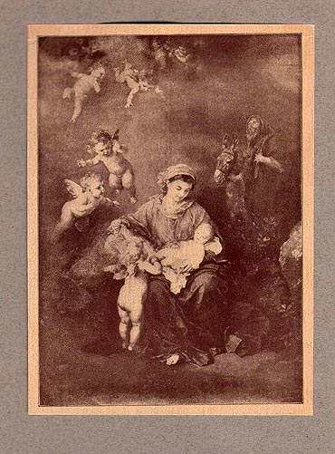

Ludwig Knaus: "The Holy Family (Repose in Egypt)"
Frontispiece for
The First Christmas: From Ben-Hur
Illustrated from Drawings by William Martin Johnson
And from Photographs (NY: Harper & Brothers, 1902)